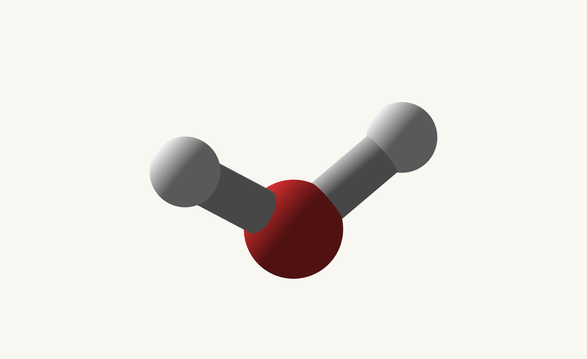

Avogadro guide · Minecraft 1.12.2 / Cleanroom
Your first molecule
Add water to Minecraft and give water buckets a rotating molecule preview. The first example starts with a JSON file you can write in any text editor. The same recipe is available in five programming and scripting languages.
1. Install the basics
Use Avogadro with Minecraft 1.12.2, Cleanroom, and ModularUI. Java integrations target Java 25. Groovy examples need GroovyScript installed. The library starts without molecule definitions; the examples below add your own.
| You want to… | Use | Where it runs |
|---|---|---|
| Add pack content without compiling | JSON files | Server config or client resource overrides |
| Add reloadable scripted definitions | GroovyScript | Common postInit scripts |
| Integrate another mod or build a screen | Java API | Common registration; client-only drawing/export code |
2. Add water
Start with JSON. You only need a text editor and an Avogadro
installation. From your instance or server folder, create the folders in this path and
save the example as water.json.
config/
gives the definition its ID, guide:water. The atom list starts with oxygen at
index 0. Each bond connects it to one hydrogen.
{
"name": "Water",
"atoms": [
{
"e": "O",
"x": 0,
"y": 0,
"z": 0
},
{
"e": "H",
"x": 0.7586,
"y": 0.5043,
"z": 0
},
{
"e": "H",
"x": -0.7586,
"y": 0.5043,
"z": 0
}
],
"bonds": [[0, 1], [0, 2]],
"items": ["minecraft:water_bucket"],
"fluids": ["minecraft:water"],
"generate_item": true
}mods.avogadro.molecules.register('guide:water', [
name: 'Water',
atoms: [
[e: 'O', x: 0, y: 0, z: 0],
[e: 'H', x: 0.7586, y: 0.5043, z: 0],
[e: 'H', x: -0.7586, y: 0.5043, z: 0]
],
bonds: [[0, 1], [0, 2]],
items: ['minecraft:water_bucket'],
fluids: ['minecraft:water'],
generate_item: true
])import io.github.wurtzitane.avogadro.api.AvogadroApi;
import io.github.wurtzitane.avogadro.api.MoleculeView;
import java.util.concurrent.CompletableFuture;
public class WaterExample {
public static CompletableFuture<MoleculeView> register() {
var water = AvogadroApi.builder("guide:water")
.name("Water")
.atom("O", 0, 0, 0)
.atom("H", 0.7586, 0.5043, 0)
.atom("H", -0.7586, 0.5043, 0)
.bond(0, 1)
.bond(0, 2)
.items("minecraft:water_bucket")
.fluids("minecraft:water")
.generateItem(true)
.build();
return AvogadroApi.owner("guide")
.register(water);
}
}import io.github.wurtzitane.avogadro.kotlin.Avogadro
fun registerWater() = Avogadro.register("guide", Avogadro.molecule("guide:water") {
name("Water")
atom("O", 0.0, 0.0, 0.0)
atom("H", 0.7586, 0.5043, 0.0)
atom("H", -0.7586, 0.5043, 0.0)
bond(0, 1)
bond(0, 2)
items("minecraft:water_bucket")
fluids("minecraft:water")
generateItem(true)
})import io.github.wurtzitane.avogadro.scala.Avogadro
object WaterRecipe {
def register() = Avogadro.register("guide", Avogadro.molecule("guide:water") { m =>
m.name("Water")
.atom("O", 0.0, 0.0, 0.0)
.atom("H", 0.7586, 0.5043, 0.0)
.atom("H", -0.7586, 0.5043, 0.0)
.bond(0, 1)
.bond(0, 2)
.items("minecraft:water_bucket")
.fluids("minecraft:water")
.generateItem(true)
})
}import mods.avogadro.Molecules;
val water = Molecules.fragment()
.atom("O", 0.0, 0.0, 0.0)
.atom("H", 0.7586, 0.5043, 0.0)
.atom("H", -0.7586, 0.5043, 0.0)
.bond(0, 1, 1)
.bond(0, 2, 1);
Molecules.molecule("guide:water")
.name("Water")
.structure(water)
.itemSelector("minecraft:water_bucket")
.fluidSelector("minecraft:water")
.generateItem(true)
.register();Where to put the other examples
- GroovyScript uses
groovy/postInit/molecules.groovy. - CraftTweaker uses a
.zsfile inscripts/. - Java, Kotlin, and Scala 3 register from your mod’s common initialization. Call the example method once and use the returned future if later work needs the new view.
See language setup and API examples for dependencies.


3. Reload and check
| Source | How to refresh | Check |
|---|---|---|
| Common server JSON |
/ (permission level 2)
|
Hover a water bucket; inspect latest. for rejected files
|
| Client assets and local JSON | F3+T |
Only the client view changes |
| GroovyScript | Your GroovyScript reload workflow | The script registry replaces its retained contribution |
| Java registration | Apply another owner registration/update | The future completes when the replacement view is ready |
H2. Avogadro
draws the subscripts. Leave the formula out when you want it calculated from the atoms.
4. Pick your next step
Use the example gallery to choose a molecule and a feature. For exact coordinates, continue with building and editing. For custom screens or files, go to rendering or exports.
Shader packs
BSL 10.1.8 is the recommended shader pack for Pulsar RGB lighting. Colored lighting on the periodic table painting can render incorrectly with Complementary Reimagined and Unbound, including their Euphoria variants.
These versions were tested with Demonica 0.9.1 on Cleanroom 0.7.14-alpha.
| Shader pack | Version | Euphoria Patches |
|---|---|---|
| BSL | 10.1.8 | Not applicable |
| Complementary Reimagined | r5.9.3 | Optional: 1.10.5 |
| Complementary Unbound | r5.9.3 | Optional: 1.10.5 |
Euphoria is the patch set also used with Angelica. Use EuphoriaPatcher 1.10.5 for r5.9.3,
choosing its
forgeLegacy build for Minecraft 1.12.2. Follow the
Euphoria installation instructions
and keep the original shader ZIP unchanged.
Calls used in the examples
| Call or setting | Arguments | What it does |
|---|---|---|
AvogadroApi.builder(id)
|
Namespaced molecule ID | Use a stable ID such as guide:water. |
atom(element, x, y, z) /
bond(first, second)
|
Element and coordinates; two atom indices | Place each atom and connect oxygen to both hydrogens. |
items(...) /
fluids(...)
|
Existing item selectors and fluid names | Choose which stacks display the model. |
generateItem(true)
|
Boolean flag | Request a molecule sample item in addition to matching existing stacks. |
AvogadroApi.owner(name).register(definition)
|
Owner identifier; built definition | Publish the definition asynchronously and handle success or failure. |
When you finish: A builder creates a model but does not add it to the
game. Java registrations use a name, called an owner, to group the definitions your mod
controls; choose your mod ID. A RegistrationJob lets you cancel pending work
or remove its installed set later. JSON and Groovy registrations use their file or script
loading rules instead. Keep drawing and exports in client code.